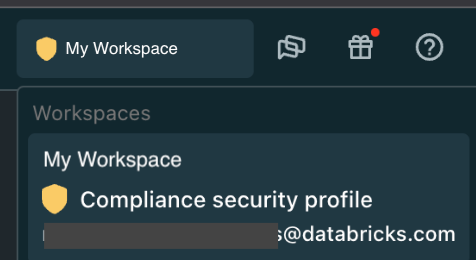

Enable the compliance security profile
If a Databricks workspace has the compliance security profile enabled, the workspace has additional monitoring, enforced instance types for inter-node encryption, a hardened compute image, and other features and controls. For details, see Features and technical controls.
The compliance security profile includes controls that help meet the applicable security requirements of some compliance standards.
Enabling the compliance security profile is required to use Databricks to process data that is regulated under the following compliance standards:
You can choose to enable the compliance security profile for its enhanced security features without the need to conform to a compliance standards.
Contact your Databricks account team to enable the compliance security profile. Choose how you want to enable the compliance security profile:
Account level: You can choose to apply the compliance security profile to your account, in which case all existing and future workspaces in the account use the security profile.
Workspace level: You can specify which workspaces for which security profiles are enabled.
Important
If you create additional workspaces later, it is your responsibility to contact your Databricks account team to request enablement of the compliance security profile on your new workspaces if needed.
Which compute resources get enhanced security
The compliance security profile enhancements apply to compute resources in the classic compute plane, such as clusters and non-serverless SQL warehouses. This applies in all regions.
Serverless SQL warehouse support for the compliance security profile varies by region. See Serverless SQL warehouses support the compliance security profile in some regions.
Requirements
Your Databricks account must include the Enhanced Security and Compliance add-on. For details, see the pricing page.
Your Databricks workspace is on the E2 version of the platform.
Your Databricks workspace is on the Enterprise pricing tier.
Single sign-on (SSO) authentication is configured for the workspace.
Your Databricks workspace’s root S3 bucket cannot have a period character (
.) in its name, such asmy-bucket-1.0. If an existing workspace’s root S3 bucket has a period character in the name, contact your Databricks account team before enabling the compliance security profile.
Enable the compliance security profile
Prepare any existing workspaces that will use the compliance security profile. See Prepare a workspace for the compliance security profile.
Contact your Databricks account team and request enabling the compliance security profile.
Decide whether you want to enable it at the account level or just for some workspaces.
If you want to enable it just for some workspaces, send the list of workspace IDs for the workspaces that you would like to use for the profile. Get a workspace ID from the URL when you are using the workspace. Look for
o=in the URL. The number aftero=is the Databricks workspace ID. For example, if the URL ishttps://<databricks-instance>/?o=6280049833385130, the workspace ID is6280049833385130.Wait for confirmation from Databricks that the profile is now enabled.
Important
After you receive notification that the profile is enabled, settings may take up to an additional six hours to propagate to all environments, including global regions and to downstream systems like billing. Workloads that are actively running continue with the settings that were active at the time of starting the cluster or other compute resource, and new settings will start applying the next time these workloads are started. This means that if a change is made late in the day or on the last day of the month, you might still see usage reported with the old settings early the next day or month. Please plan accordingly.
If any clusters or SQL warehouses were running, restart them. If you have many clusters running and only want to restart the ones that were started before enablement, you can use a script that Databricks provides to determine if the start time was before the enablement date.
Now that profile setup is complete, create or use Databricks compute resources as desired.
Long-running clusters
If you enable the compliance security profile for your account or your workspace, long-running clusters automatically restart after 25 days by default. Databricks recommends that workspace admins regularly restart clusters before they run for 25 days and do so during a scheduled maintenance window. This reduces the risk of an auto-restart disrupting a scheduled job.
If you want to restart long running clusters manually, you can use a script that Databricks provides that can determine how long your clusters have been running, and optionally restart them. See Notebook example: Find long-running clusters.
Note
If your workspace is part of the public preview of automatic cluster update, the behavior is different. Compute resources automatically restart only if updates are needed. You can choose a regular monthly or twice-monthly schedule, in which case the 25-day limit does not apply and the legacy workspace setting Automatic Restart of Long Running Clusters is ignored.
Prepare a workspace for the compliance security profile
Some steps are necessary to prepare a workspace for the compliance security profile. If you have not yet enabled the security profile, follow these steps before requesting to enable the security profile.
If the security profile is already enabled at an account level and you create any new workspaces, you must follow these steps after you create any new workspace.
If you enable the compliance security profile for your account or your workspace, long-running clusters are automatically restarted after 25 days. If any clusters were running 25 days or longer when the compliance security profile is enabled, the clusters immediately restart, which causes running jobs to fail. Instead, check for long-running clusters before you enable the security profile. This reduces the risk of an auto-restart disrupting a scheduled job. Check how long your clusters have been running and restart any that have been running longer than 20 days (not 25 days) to reduce the risk of clusters being auto-restarted after 25 days running when the security profile is enabled. See Restart a cluster.
Note
If your workspace is part of the public preview of automatic cluster update, the behavior is different. Compute resources automatically restart only if updates are needed. You can choose a regular monthly or twice-monthly schedule, in which case the 25-day limit does not apply and the legacy workspace setting Automatic Restart of Long Running Clusters is ignored.
Configure Single sign-on (SSO) authentication.
Add required network ports.
For workspaces with PrivateLink back-end connectivity: You must make a change to support FIPS encryption if the workspace uses a PrivateLink back-end connection for private connectivity between the classic compute plane in your AWS account and the Databricks control plane in the Databricks account.
One of the networking requirements for PrivateLink back-end connections is to create a separate security group for the endpoint that allows HTTPS/443 and TCP/6666 with bidirectional access (from and to) for both the workspace subnets and the endpoint subnet itself. This configuration allows access for both REST APIs (port 443) and secure cluster connectivity (6666). You can then use the security group for both purposes.
To support the upcoming changes for FIPS encryption, update your network security group to additionally allow bidirectional access to port 2443 for FIPS connections. The total set of ports to allow bidirectional access are 443, 2443, and 6666.
For workspaces with no PrivateLink back-end connectivity: If the workspace does not use a PrivateLink back-end connection for private connectivity but the workspace is configured to restrict outbound network access, you need to allow traffic to additional endpoints to support FIPS endpoints.
To support the upcoming changes for FIPS encryption, update your network security group (or firewall) to allow outbound access from the compute plane to the control plane on port 2443 for FIPS connections. This is in addition to outgoing port 443 access that you are required to allow already. For related information about related security group and firewall configuration for customer-managed VPCs, see Security groups and (Optional) Configure a firewall and outbound access.
If any workspace is in the US East Region, the US West Region, or Canada (Central) Region, and it’s configured to restrict outbound network access, you need to allow traffic to additional endpoints to support FIPS endpoints. Remember that if you use those regions and do not restrict outgoing access now, if you restrict outgoing access in the future, you will need to revisit this step.
For the S3 service only, you must ensure that your classic compute plane network in your AWS account allows outgoing traffic to the AWS endpoints for the cloud services for S3 and also the FIPS variant of the S3 service with the prefix
s3-fips. This applies to the S3 service but not to STS and Kinesis endpoints.For S3, allow outgoing traffic to the endpoint
s3.<region>.amazonaws.comands3-fips.<region>.amazonaws.com. For examples3.us-east-1.amazonaws.comands3-fips.us-east-1.amazonaws.com.For STS, allow outgoing traffic to the endpoint
sts.<region>.amazonaws.com.For Kinesis, allow outgoing traffic to the endpoint
kinesis.<region>.amazonaws.com.
For every workspace that uses the profile, run the following tests to verify that the changes were correctly applied:
Launch a Databricks cluster with 1 driver and 1 worker, any DBR version, and any instance type.
Create a notebook attached to the cluster. Use this cluster for the following tests.
In the notebook, validate DBFS connectivity by running:
%fs ls / %sh ls /dbfs
Confirm that a file listing appears without errors.
In the notebook, confirm access to the control plane instance for your region. Get the address from the table this section and look for the Webapp endpoint for your VPC region.
%sh nc -zv <webapp-domain-name> 443
For example, for VPC region
us-west-2:%sh nc -zv oregon.cloud.databricks.com 443
Confirm the result says it succeeded.
In the notebook, confirm access to the SCC relay for your region. Get the address from the table this section and look for the SCC relay endpoint for your VPC region.
%sh nc -zv <scc-relay-domain-name> 2443
For example, for VPC region
us-west-1:%sh nc -zv tunnel.cloud.databricks.com 2443
Confirm that the results says it succeeded.
In the notebook, confirm access to the S3, STS, and Kinesis FIPS endpoints for your region.
Note
For this step, FIPS endpoints for Canada apply only to the S3 service. AWS does not yet provide FIPS endpoints for STS and Kinesis.
%sh nc -zv <bucket-name>.s3-fips.<region>.amazonaws.com 443 %sh nc -zv sts.<region>.amazonaws.com 443 %sh nc -zv kinesis.<region>.amazonaws.com 443
For example, for VPC region
us-west-1:%sh nc -zv acme-company-bucket.s3-fips.us-west-1.amazonaws.com 443 %sh nc -zv sts.us-west-1.amazonaws.com 443 %sh nc -zv kinesis.us-west-1.amazonaws.com 443
Confirm the results for all three commands indicate success.
In the same notebook, validate that the cluster Spark config points to the desired endpoints. For example:
>>> spark.conf.get("fs.s3a.stsAssumeRole.stsEndpoint") "sts.us-west-1.amazonaws.com" >>> spark.conf.get("fs.s3a.endpoint") "s3-fips.us-west-2.amazonaws.com"
Confirm that all existing clusters and jobs in all affected workspaces use only the instance types that are supported by the compliance security profile. Confirm or change all clusters and jobs so that the instance types are one of the following:
C5a,C5ad,C5n,C6i,C6id,C6in,D3,D3en,G4dn,G5,I3en,I4i,M5dn,M5n,M5zn,M6i,M6id,M6idn,M6in,P3dn,R-fleet,R5dn,R5n,R6i,R6id,R6idn,R6in, and Databricks fleet instance typesM-fleet,MD-fleet, andRD-fleet..Any workload with an instance type outside of the list above would result in clusters/jobs failing to startup with an
invalid_parameter_exception.
Features and technical controls
The main enhancements of the compliance security profile affect the Databricks compute resources in your workspace’s classic compute plane. For serverless SQL warehouses, support varies by region.
Enhancements include:
An enhanced disk image (a CIS-hardened Ubuntu Advantage worker image).
Clusters automatically restart after 25 days and get the latest AMI with the latest security updates. If you enable the compliance security profile for your account or your workspace, long-running clusters are automatically restarted after 25 days. Databricks recommends that workspace admins restart clusters that might be running for 25 days when the security profile is enabled and to do so during a scheduled maintenance window. This reduces the risk of an auto-restart disrupting a scheduled job. You can use a script that Databricks provides that can determine how long your clusters have been running, and optionally restart them. See Restart a cluster.
Note
If your workspace is part of the public preview of automatic cluster update, the behavior is different. Compute resources automatically restart only if updates are needed. You can choose a regular monthly or twice-monthly schedule, in which case the 25-day limit does not apply and the legacy workspace setting Automatic Restart of Long Running Clusters is ignored.
Security monitoring agents that generate logs that you can review. Two monitor agents run on compute resources (cluster workers) in your workspace’s classic compute plane, for clusters and also for pro or classic SQL warehouses. The monitors are for antivirus and file integrity monitoring.
To review the new log rows, set up audit log delivery. For additional information about audit logs, see Audit log reference.
Enforced use of AWS Nitro instance types in cluster and Databricks SQL SQL warehouses. Instance types are limited to those that provide both hardware-implemented network encryption between cluster nodes and encryption at rest for local disks. This applies to clusters for notebooks and jobs as well as pro or classic SQL warehouses for use with Databricks SQL. The supported instance types are
C5a,C5ad,C5n,C6i,C6id,C6in,D3,D3en,G4dn,G5,I3en,I4i,M5dn,M5n,M5zn,M6i,M6id,M6idn,M6in,P3dn,R-fleet,R5dn,R5n,R6i,R6id,R6idn,R6in, and Databricks fleet instance typesM-fleet,MD-fleet, andRD-fleet..Communications for egress use TLS 1.2 or higher, including connecting to the metastore.
Clusters are limited to the versions that the compliance security profile supports. Databricks limits the Databricks Runtime versions in the UI, and does not allow API requests for unsupported Databricks Runtime versions. Supported versions are Databricks Runtime 7.3 LTS and above.
A shield logo appears in the top-right of the page, just to the left of the workspace name. See Confirm that the compliance security profile is enabled for a workspace.
Databricks runs two monitoring agents in the compute plane:
Antivirus
File integrity monitoring
Disk image with enhanced hardening
While the compliance security profile is enabled, Databricks compute resources (cluster worker images) in your classic compute plane use an enhanced hardened operating system image based on Ubuntu Advantage.
Ubuntu Advantage is a package of enterprise security and support for open source infrastructure and applications that includes the following:
A CIS Level 1 hardened image.
FIPS 140-2 Level 1 validated encryption modules.
Monitoring agents in Databricks compute images
While the compliance security profile is enabled, there are additional security monitoring agents, including two agents that are pre-installed in the images that are used for Databricks compute resource VMs. You cannot disable the monitoring agents that are in the enhanced disk image.
Monitoring agent |
Description |
How to get output |
|---|---|---|
File integrity monitoring |
Monitors for file integrity and security boundary violations. This monitor agent runs on the worker VM in your cluster. |
Enable the audit log system table and review logs for new rows. |
Antivirus and malware detection |
Scans the filesystem for viruses daily. This monitor agent runs on the VMs in your compute resources such as clusters and pro or classic SQL warehouses. The antivirus and malware detection agent scans the entire host OS filesystem and the Databricks Runtime container filesystem. Anything outside the cluster VMs is outside of its scanning scope. |
Enable the audit log system table and review logs for new rows. |
Vulnerability scanning |
Scans the container host (VM) for certain known vulnerabilities and CVEs. The scanning happens in representative images in the Databricks environments. |
Request scan reports on the image from your Databricks account team. |
File integrity monitoring
The compute plane image includes a file integrity monitoring service that provides runtime visibility and threat detection for compute resources (cluster workers) in the classic compute plane in your workspace.
The file integrity monitor output is generated within your audit logs, which you can access with system tables (Public Preview). For the JSON schema for new auditable events that are specific to file integrity monitoring, see File integrity monitoring events.
Important
It is your responsibility to review antivirus monitor logs. Databricks may, in its sole discretion, review these logs but does not make a commitment to do so. If the agent detects a malicious activity, it is your responsibility to triage these events and open a support ticket with Databricks if the resolution or remediation requires an action by Databricks. Databricks may take action on the basis of these logs, including suspending or terminating the resources, but does not make any commitment to do so.
Antivirus and malware detection
The enhanced compute plane image includes an antivirus engine for detecting trojans, viruses, malware, and other malicious threats. The antivirus monitor scans the entire host OS filesystem and the Databricks Runtime container filesystem. Anything outside the cluster VMs is outside of its scanning scope.
The antivirus monitor output is generated within audit logs, which you can access with system tables (Public Preview). For the JSON schema for new auditable events that are specific to antivirus monitoring, see Antivirus monitoring events.
When a new virtual machine image is built, updated signature files are included within it.
Important
It is your responsibility to review antivirus monitor logs. Databricks may, in its sole discretion, review these logs but does not make a commitment to do so. If the agent detects a malicious activity, it is your responsibility to triage these events and open a support ticket with Databricks if the resolution or remediation requires an action by Databricks. Databricks may take action on the basis of these logs, including suspending or terminating the resources, but does not make any commitment to do so.
When a new AMI image is built, updated signature files are included within the new AMI image.
Vulnerability scanning
A vulnerability monitor agent performs vulnerability scans of the container host (VM) for certain known CVEs.
Important
The scanning happens in representative images in the Databricks environments.
You can request the vulnerability scan reports from your Databricks account team.
When vulnerabilities are found with this agent, Databricks tracks them against its Vulnerability Management SLA and releases an updated image when available. It is your responsibility to restart all compute resources regularly to keep the image up-to-date with the latest image version.
Note
If your workspace is part of the public preview of automatic cluster update, clusters restart only if needed during the scheduled maintenance windows.
Management and upgrade of monitoring agents
The additional monitoring agents that are on the disk images used for the compute resources in the classic compute plane are part of the standard Databricks process for upgrading systems:
The classic compute plane base disk image (AMI) is owned, managed, and patched by Databricks.
Databricks delivers and applies security patches by releasing new AMI disk images. The delivery schedule depends on new functionality and the SLA for discovered vulnerabilities. Typical delivery is every two to four weeks.
The base operating system for the compute plane is Ubuntu Advantage.
Databricks clusters and pro or classic SQL warehouses are ephemeral by default. Upon launch, clusters and pro or classic SQL warehouses use the latest available base image. Older versions that may have security vulnerabilities are unavailable for new clusters.
You are responsible for restarting clusters (using the UI or API) regularly to ensure they use the latest patched host VM images.
Databricks can, upon request, share a Databricks notebook to identify your workspace’s running clusters and hosts older than a specified number of days and optionally, restart a cluster.
Note
If your workspace is part of the public preview of automatic cluster update, clusters restart only if needed during the scheduled maintenance windows.
Monitor agent termination
If a monitor agent on the worker VM is found to be not running due to crash or other termination, the system will attempt to restart the agent.
Data retention policy for monitor agent data
Monitoring logs are sent to the audit log system table or your own Amazon S3 bucket if you configured audit log delivery. Retention, ingestion, and analysis of these logs is your responsibility.
Vulnerability scanning reports and logs are retained for at least one year by Databricks. You can request the vulnerability reports from your Databricks account team.
Confirm that the compliance security profile is enabled for a workspace
To confirm that a workspace is using the compliance security profile, check that it has the yellow shield logo displayed in the user interface.
A shield logo appears in the top-right of the page, to the left of the workspace name:
If you click the workspace name, a menu shows a list of the workspaces that you have access to. The workspaces that enable the compliance security profile have a shield icon followed by the text “Compliance security profile”.

Important
If the shield icons are missing for a workspace with the compliance security profile enabled, contact your Databricks account team.
Check whether any existing clusters need to be restarted after enablement
After a workspace is enabled with the compliance security profile, you need to restart any clusters that were created before the time of enablement to ensure it is using the compliance security profile enhancements and controls.
Note
If your workspace is part of the public preview of automatic cluster update, you might not need this script. Clusters restart automatically if needed during the scheduled maintenance windows.
If you have many clusters running and only want to restart the ones that were started before enablement, you can use this script to determine if the start time was before the enablement date. Given a workspace URL, a personal access token for access REST APIs on this workspace, and an enablement date/time, this script returns a list of clusters that were started and/or restarted before the enablement timestamp. The script prints the cluster ID and the cluster name.
import requests
import json
# This notebook requires a user-level Personal Access Token. This should be stored
# in the Databricks Secrets API (or similar) and shouldn't be hardcoded in a notebook.
# Add a secret using the Databricks CLI or API. CLI example:
# $ databricks secrets create-scope YOUR_SCOPE_NAME
# $ databricks secrets put-secret splunk_env YOUR_KEY_NAME
# Configure your scope and key name below.
#====== UPDATE THE FOLLOWING BELOW
WORKSPACE_URL="<WORKSPACE-URL-HERE>"
TOKEN=dbutils.secrets.get(scope="YOUR_SCOPE_NAME", key="YOUR_KEY_NAME")
# One of the below should be configured:
WORKSPACE_ENABLEMENT_TIME_UTC_MILLIS=<TIME-IN-UTC> # note millis, e.g. 1651366230000
WORKSPACE_ENABLEMENT_TIME_FORMATTED=None # Format YYYY-MM-DD HH:MM:SS -0000
# Example "2022-06-01 15:01:01 -0700"
#====== UPDATE THE ABOVE
if WORKSPACE_ENABLEMENT_TIME_FORMATTED != None:
WORKSPACE_ENABLEMENT_TIME_UTC_MILLIS=datetime.strptime(
WORKSPACE_ENABLEMENT_TIME_FORMATTED,
"%Y-%m-%d %H:%M:%S %z").timestamp()*1000
headers = {
'Authorization': 'Bearer ' + TOKEN
}
url = WORKSPACE_URL + "/api/2.0/clusters/list"
response = requests.request("GET", url, headers=headers, data={})
clusters = json.loads(response.text)["clusters"]
need_restart = []
for c in clusters:
start_time = c["start_time"]
last_start = start_time
if "last_restarted_time" in c:
last_start = max(start_time, c["last_restarted_time"])
if last_start <= WORKSPACE_ENABLEMENT_TIME_UTC_MILLIS:
need_restart.append((c["cluster_id"], c["cluster_name"]))
if (len(need_restart) == 0):
print("All clusters have been restarted since {}".format(WORKSPACE_ENABLEMENT_TIME_UTC_MILLIS))
else:
print("The following clusters still need to be restarted to remain in compliance")
for (id, name) in need_restart:
print("Cluster {}, {}".format(id, name))